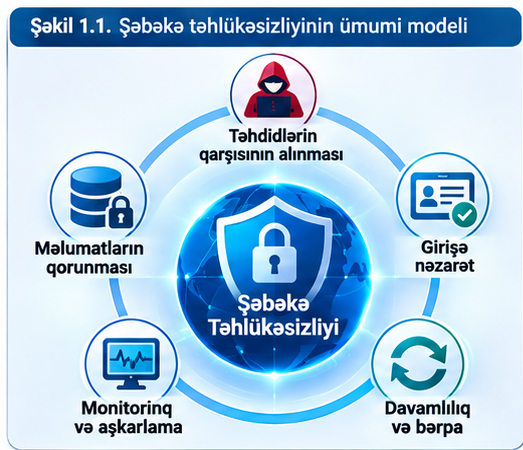
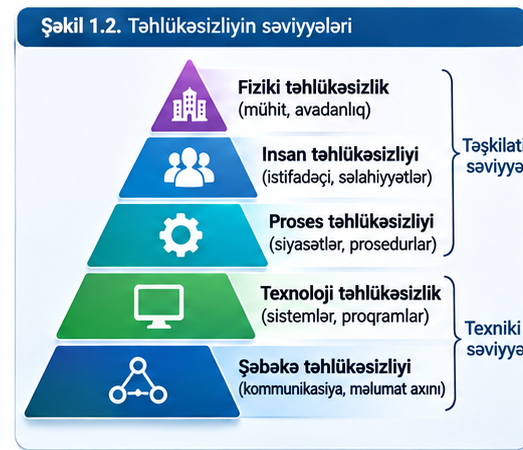
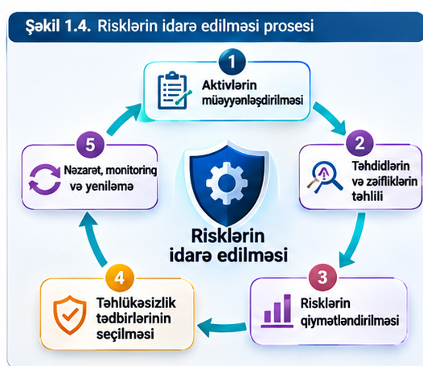
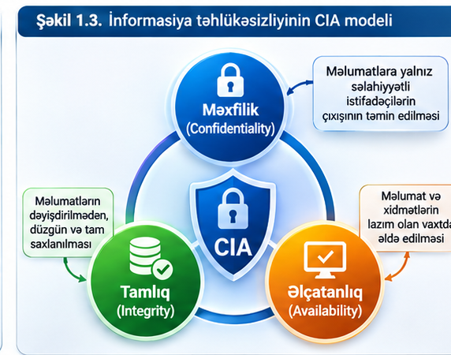
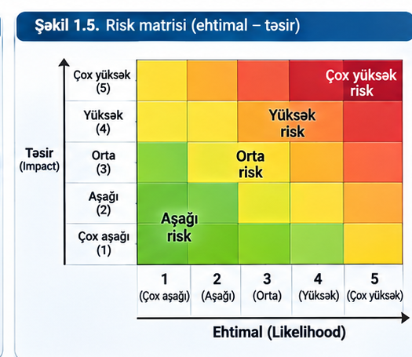

Modulun məqsədi və öyrənmə nəticələri
Bu modul informasiya və şəbəkə təhlükəsizliyinin əsas anlayışlarını, təhlükəsizlik növlərini, CIA modelini və təhlükəsizlik prinsiplərini öyrənmək üçün nəzərdə tutulub.
1.1. Təhlükəsizliyə giriş
Təhlükəsizlik istifadəçiləri, informasiya aktivlərini, avadanlığı və sistemləri mümkün zərər və icazəsiz müdaxilələrdən qorumağa yönəlmiş tədbirlər məcmusudur. İnformasiya təhlükəsizliyi informasiyanın qorunmasına, kibertəhlükəsizlik isə rəqəmsal mühitdə sistem və şəbəkələrin təhdidlərdən müdafiəsinə diqqət yetirir.
Şəbəkə mühitində təhlükəsizlik yalnız texniki vasitələrlə təmin edilmir. Təşkilati qaydalar, istifadəçi davranışı, fiziki mühafizə, girişə nəzarət, ehtiyat nüsxələmə və insidentlərə cavab tədbirləri birlikdə işləməlidir.

Təhlükəsizlik tədbirlərinin nümunələri
| Tədbir | Məqsəd | Nümunə |
|---|---|---|
| İnzibati | Qaydaları və məsuliyyəti müəyyənləşdirmək | Parol siyasəti, istifadəçi təlimi |
| Fiziki | Avadanlıq və məkanları qorumaq | Server otağına kartla giriş |
| Texniki | Sistem və məlumatları texnoloji vasitələrlə qorumaq | Firewall, şifrələmə, MFA |
1.2. Təhlükəsizliyin növləri və standartları
Təhlükəsizlik tədbirləri təşkilatın fəaliyyətinə, qorunan aktivlərə və mümkün təhdidlərə uyğun seçilir. İnzibati, fiziki, informasiya və kibertəhlükəsizlik bir-birini tamamlayan istiqamətlərdir.

Standartlar təhlükəsizlik idarəetməsinin sistemli qurulmasına kömək edir. Dərslikdə ISO 27001 təhlükəsizlik siyasətinin hazırlanması üçün nümunə kimi göstərilir.
1.3. Təhlükəsizlik anlayışları və terminləri
| Anlayış | İzah |
|---|---|
| Aktiv | Qorunmalı olan məlumat, sistem, avadanlıq və ya xidmət. |
| Təhdid | Məlumata və ya sistemə zərər verə biləcək potensial təhlükə. |
| Zəiflik | Təhlükəsizliyi poza biləcək sistem zəif nöqtəsi. |
| Risk | Təhdidin zəiflikdən istifadə etməsi ehtimalı və mümkün nəticəsi. |
| Mühafizə | Təhdid və riskləri azaltmaq üçün görülən tədbirlər. |
| Autentifikasiya | İstifadəçi və ya sistemin kimliyinin yoxlanılması. |
| Avtorizasiya | Uğurlu autentifikasiyadan sonra giriş hüquqlarının verilməsi. |
| Şifrələmə | Məlumatın açar və alqoritm vasitəsilə anlaşılmaz formaya çevrilməsi. |
| MFA | Şəxsiyyətin iki və ya daha çox amillə yoxlanılması. |

1.4. İnformasiya təhlükəsizliyinin üçlü modeli (CIA)
CIA modeli üç əsas məqsədi birləşdirir: məxfilik (Confidentiality), tamlıq (Integrity) və əlçatanlıq (Availability).

Hadisənin CIA komponentlərinə təsirini yoxla
Risk qiymətləndirmə kalkulyatoru
Bu sadələşdirilmiş tədris modeli ehtimal və təsir ballarının hasilindən istifadə edir: Risk balı = Ehtimal × Təsir.

1.5. Təhlükəsizlik prinsipləri
Təhlükəsizlik prinsipləri strategiya, siyasət və prosedurların hazırlanması üçün əsas yaradır. Dərslikdə məxfilik, tamlıq, əlçatanlıq, autentifikasiya, avtorizasiya, bölünməzlik, davamlılıq, qarşılıqlı asılılıq, proaktivlik, təlim və maarifləndirmə kimi prinsiplər izah edilir.
Praktikada bir tədbir bir neçə prinsipə eyni vaxtda təsir edə bilər. Məsələn, çoxfaktorlu autentifikasiya icazəsiz giriş ehtimalını azaldır və məxfiliyin qorunmasına kömək edir.
Laboratoriya işi № 1
İşin adı
İnformasiya təhlükəsizliyinin CIA modelinin interaktiv simulyasiyası və təşkilati risklərin qiymətləndirilməsi
İşin məqsədi
İnformasiya aktivlərini və təhdidləri müəyyənləşdirmək, məxfilik–tamlıq–əlçatanlıq (CIA) modelinin real iş mühitində təsirini simulyasiya etmək, ehtimal və təsir göstəriciləri üzrə riskləri hesablamaq, mühafizə tədbirlərinin nəticəsini müqayisə etmək, təhlükəsizlik siyasəti hazırlamaq və istifadəçilərin məlumatlılığını ölçmək.
Nəzəri hissə
Aktiv təşkilat üçün dəyərli informasiya, sistem və ya resursdur. Təhdid zərər yarada bilən hadisə, zəiflik isə təhlükənin istifadə edə biləcəyi çatışmazlıqdır. Nəzarət tədbiri riski azaltmaq üçün tətbiq edilən təşkilati və ya texniki müdafiədir.
Sadələşdirilmiş risk modeli: R = E × T; burada E — hadisənin ehtimalı (1–5), T — təsirin ağırlığı (1–5). Tədris şkalası: 1–5 aşağı, 6–12 orta, 13–25 yüksək risk. Müdafiədən sonrakı qalıq risk nəzarət tədbirinin ehtimal və/və ya təsirə təsiri nəzərə alınmaqla yenidən hesablanır. Bu şkala beynəlxalq standartın məcburi formulu deyil, təlim modelidir.
Praktiki hissə — interaktiv simulyasiyalar
Simulyasiya 1. CIA modeli: virtual universitet sistemində insident
Hadisəni seçin, mühafizə mexanizmlərini aktivləşdirin və sistemin vəziyyətinin necə dəyişdiyini müşahidə edin. Müdafiə seçimləri real sistemə təsir etmir.
Simulyasiya 2. Risk laboratoriyası: tədbirdən əvvəl və sonra
Aktiv, zəiflik və nəzarət tədbirini seçin. Ehtimal və təsiri dəyişdirərək ilkin və qalıq riskləri hesablayın.
Nəzarət tədbirlərinin təsir əmsalları nümayiş məqsədilə təyin edilib; real təşkilatda qiymətləndirmə sübutlara əsaslanmalıdır.
Simulyasiya 3. Təhlükəsizlik hadisəsinə cavab: qərar ağacı
Virtual ssenari: tələbə hesabından qeyri-adi saatda çoxsaylı giriş cəhdləri qeydə alınıb. Addım-addım qərar verin. Təhlükəsiz cavab tədbirləri insidentin nəticəsini yaxşılaşdırır.
Simulyasiya 4. Təşkilatın təhlükəsizlik siyasəti konstruktoru
Təşkilat üçün tədbirlər seçin. Seçdiyiniz qaydalara uyğun avtomatik siyasət layihəsi və əhatə göstəricisi yaranacaq.
Simulyasiya 5. Təhlükəsizlik məlumatlılığı: situasiya testi
Hər situasiyada ən təhlükəsiz davranışı seçin. Sistem hər cavaba dərhal izah verir və yekun nəticəni hesablayır.
Laboratoriya işinin yerinə yetirilməsi ardıcıllığı
- Simulyasiya 1-də dörd hadisəni yoxlayın və CIA göstəricilərinin dəyişməsini müqayisə edin.
- Simulyasiya 2-də ən azı iki aktiv üçün ilkin və qalıq riskləri hesablayın.
- Simulyasiya 3-də hadisəyə cavab ssenarisini tamamlayın və qərarların nəticələrini təhlil edin.
- Simulyasiya 4-də təşkilatın təhlükəsizlik siyasətini formalaşdırın.
- Simulyasiya 5-də məlumatlılıq testini tamamlayın.
- Hesabatı yaradın və nəticələri müəllimə təqdim edin.
Hesabat və qiymətləndirmə
Hesabatda işin adı və məqsədi, istifadə edilən anlayışlar, hadisələrin CIA təsiri, risk hesablamaları, tətbiq edilən nəzarət tədbirləri, qərar ssenarisi, siyasət layihəsi, test nəticəsi və yekun təkliflər göstərilməlidir.
Yoxlama sualları — 10 real həyat ssenarisi
Tapşırıqlar Modul 1-in təhlükəsizlik anlayışları, CIA modeli, risklər, autentifikasiya, təhlükəsizlik prinsipləri və insidentlərə cavab mövzularına əsaslanır. Yeddi interaktiv sual formatı istifadə olunur: tək seçim, çoxseçimli, doğru/yanlış, ardıcıllıq, uyğunlaşdırma, boşluğu doldurma və situasiya üzrə qərar.
Mənbə və metodiki qeyd
Bu modulun əsas mənbəyi istifadəçinin təqdim etdiyi “Şəbəkə təhlükəsizliyi” dərsliyinin Modul 1 bölməsidir. Modulun başlıqları və dərslikdəki praktiki tapşırıqların məntiqi saxlanılmışdır. Kalkulyatorlar, simulyasiya ssenariləri və siyasət konstruktoru həmin məzmunun interaktiv tədris əlavələridir.
Qeyd: Risk kalkulyatoru tədris məqsədli sadələşdirilmiş modeldir; təşkilatın rəsmi risk metodologiyasını əvəz etmir.
Ədəbiyyat
Modul 1-də təhlükəsizliyin əsas anlayışları, informasiya təhlükəsizliyinin prinsipləri, hüquqi tənzimləmə, CIA modeli və risklərin idarə edilməsi mövzularını öyrənmək üçün təqdim edilmiş ümumi ədəbiyyat siyahısından seçilmiş mənbələr.
- Azərbaycan Respublikasının Konstitusiyası. Bakı, 2009.
- Dövlət sirri haqqında Azərbaycan Respublikasının Qanunu. Bakı, 2004.
- Azərbaycan haqqında məlumat əldə etmək qanunu. Bakı, 2005.
- Fərdi məlumatlar haqqında Azərbaycan Respublikasının Qanunu. Bakı, 2010.
- Kommersiya sirri haqqında Azərbaycan Respublikasının Qanunu. Bakı, 2001.
- Azərbaycan Respublikasının məlumat azadlığı haqqında Qanunu. Bakı, 1998.
- Milli təhlükəsizlik haqqında Azərbaycan Respublikasının Qanunu. Bakı, 2004.
- Azərbaycan Respublikasının informasiya təhlükəsizliyi və kibertəhlükəsizliyə dair 2023–2027-ci illər üçün Strategiyası. 28 avqust 2023.
- Azərbaycan Respublikası Prezidentinin “İnformasiya təhlükəsizliyi sahəsində fəaliyyətin təkmilləşdirilməsi tədbirləri haqqında” 26 sentyabr 2012-ci il tarixli 708 nömrəli Fərmanı.
- İsmayıl Calallı (Sadıqov). İnformatika terminlərinin izahlı lüğəti. Bakı: “Bakı” nəşriyyatı, 2017, 996 s.
- Əlizadə M.N., Bayramov H.M., Məmmədov Ə.S. İnformasiya təhlükəsizliyi. Dərslik. Bakı: “İqtisad Universiteti” nəşriyyatı, 2016, 384 s.
- Qasımov V.Ə. İnformasiya təhlükəsizliyinin əsasları. Dərslik. Bakı, 2009, 340 s.
- Qasımov V.Ə. İnformasiya təhlükəsizliyi: kompüter cinayətkarlığı və kiberterrorçuluq. Bakı, 2007.
- Əliquliyev R.M., İmamverdiyev Y.N. İnformasiya təhlükəsizliyi insidentləri. Bakı, 2012, 219 s.
- Whitman, M.E., Mattord, H.J. İnformasiya təhlükəsizliyinin prinsipləri (ingilis dilindən tərcümə). Bakı: TEAS Press, 2024, 556 s.
- Nieles, M., Dempsey, K., Pillitteri, V.Y. An Introduction to Information Security. USA, 2017, 101 p.
- Whitman, M.E., Mattord, H.J. Principles of Information Security. 7th Edition.
- Johnson, T.A. Cyber: Protecting Critical Infrastructures from Cyber Attack and Cyber Warfare. Webster University, St. Louis, Missouri, USA, 2015, 348 p.
- Вострецова, Е.В. Основы информационной безопасности: учебное пособие. Екатеринбург: Издательство Уральского университета, 2019, 204 с.
- Теоретические основы компьютерной безопасности / П.Н. Девянин и др. Москва: Радио и связь, 2000, 192 с.
- Малюк, А.А., Пазизин, С.В., Погожин, Н.С. Введение в защиту информации в автоматизированных системах. Москва: Горячая линия — Телеком, 2001, 148 с.
- Симонов, С.В. Методология анализа рисков в информационных системах. Конфидент, 2001, № 1.
- Сизова, О.В. Информационная безопасность: учебное пособие. Иваново, 2015, 120 с.
- Соловьев, А.А., Метелев, С.Е., Зырянова, С.А. Защита информации и информационная безопасность. Омск, 2011, 426 с.
- Шаньгин, В.Ф. Информационная безопасность компьютерных систем и сетей. Москва: Форум, Инфра-М, 2017, 416 с.
Qeyd: Siyahı istifadəçinin təqdim etdiyi ümumi ədəbiyyat siyahısından Modul 1-in mövzularına uyğun seçilib. Mənbələrin biblioqrafik təsviri təqdim edilmiş mətndəki məlumatlar əsasında verilib; ilkin siyahıda olan yazılış və nəşr məlumatları ayrıca bibliografik yoxlamadan keçirilməyib.